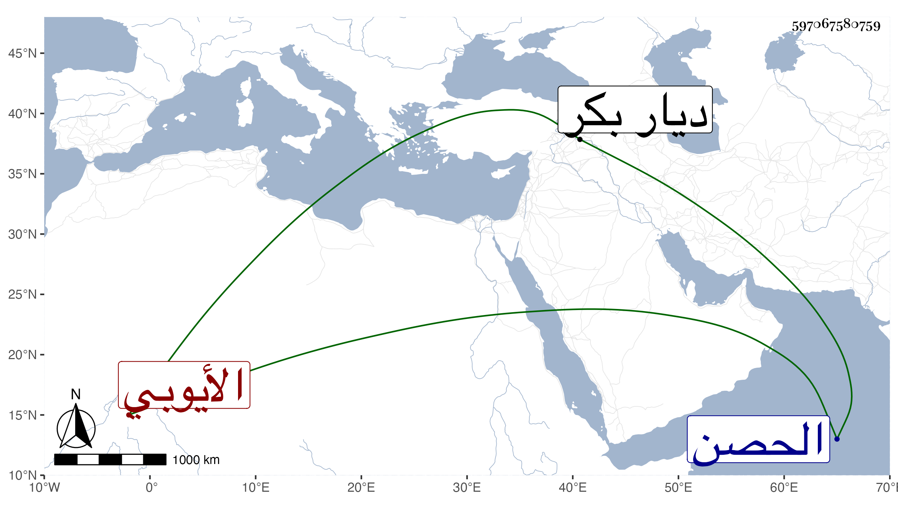

0902Sakhawi.DawLamic.ITO20230111-ara1.EIS1600.597067580759
Biography ID: 597067580759
1093
أيوب بن علي بن محمود بن العادل سليمان الأيوبي أخو الصالح زين الدين آخر ملوك الحصن من بني أيوب . كان هو القائم بتدبير المملكة لأخيه إلى أن قتلهما مع أخ لهما ثالث اسمه عبد الرحمن حسن باك بن علي بن قرا بلوك صاحب ديار بكر وملك الحصن بمخامرة بعض امراء الصالح عليه وذلك في سنة ست وستين كما سيأتي في خلف بن محمد بن سليمان .
